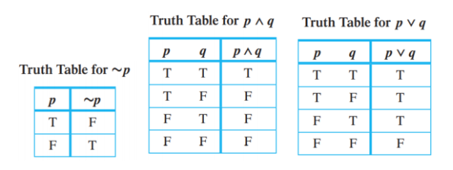
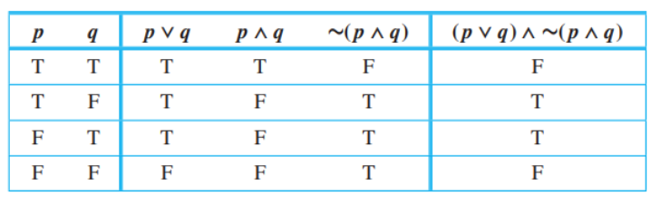
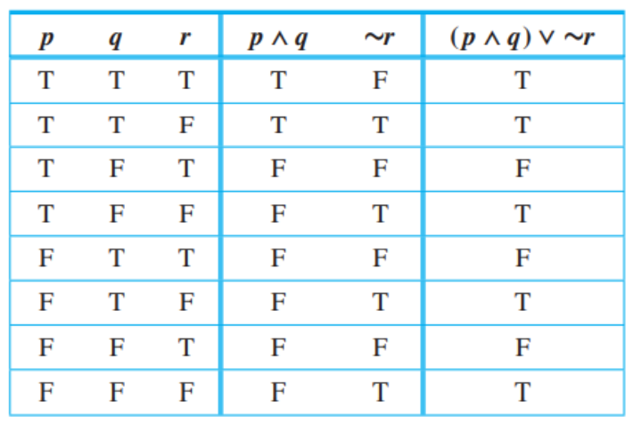
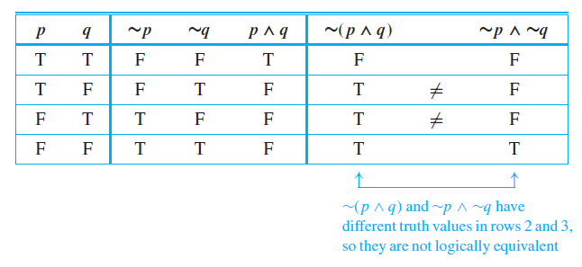
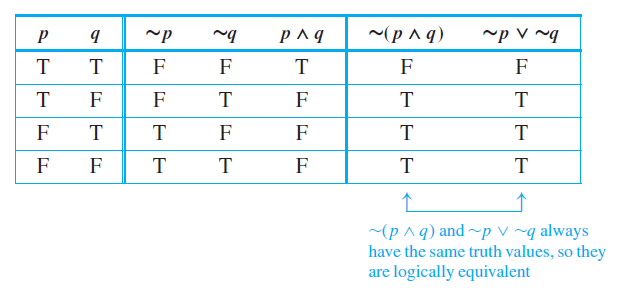
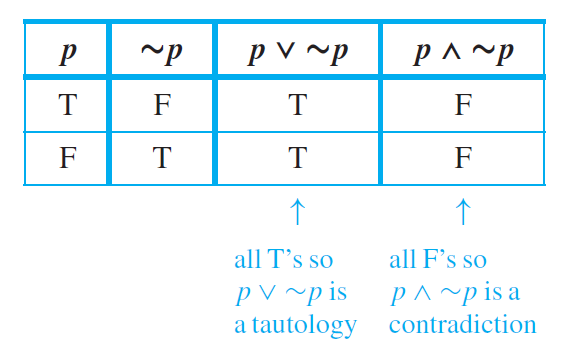
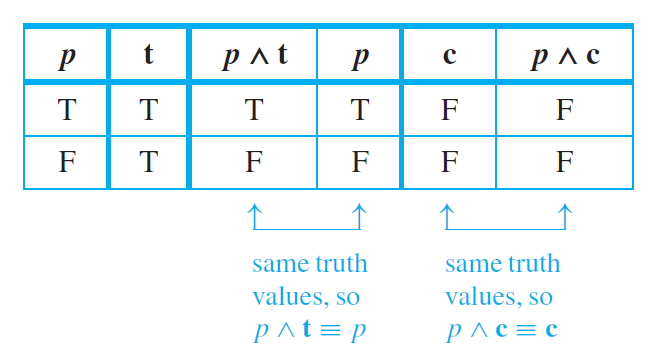

TOPIC 1.1
Logical Form and Logical Equivalence
TOPIC 1.1
Logical Form and Logical Equivalence
1.1 Logical Form and Logical Equivalence
Lesson Objectives
- To recognize the central concepts of logic.
- To properly define statements and their meanings.
- To construct truth tables and derive equivalent statements.
- To simplify expressions using logical identities.
- To determine the logical equivalence between statements.
Introduction to Logic
Logic is the science of reasoning. It helps us to understand and reason about different mathematical statements With rules of logic, we would be able to think about mathematical statements and finally, we would be able to prove or disprove those mathematical statements precisely by constructing valid arguments. The rules of mathematical logic specify methods of reasoning mathematical statements. Greek philosopher, Aristotle, was the pioneer of logical reasoning. Logical reasoning provides the theoretical base for many areas of mathematics and consequently computer science. It has many practical applications in computer science like design of computing machines, artificial intelligence, definition of data structures for programming languages, and others.
The central concept of deductive logic is the concept of argument form. An argument is a sequence of statements aimed at demonstrating the truth of an assertion. The assertion at the end of the sequence is called the conclusion, and the preceding statements are called premises. To have confidence in the conclusion that you draw from an argument, you must be sure that the premises are acceptable on their own merits or follow from other statements that are known to be true.
In logic, the words sentence, true, and false are the initial undefined terms. Furthermore, propositional variables are used to represent parts of the statements.
The argument form can be represented by the following:
If $$p$$ or $$q$$, then $$r$$.
$$q$$
Therefore, $$r$$.
Interpreting Statements
A statement (or proposition) is a declarative sentence (a sentence that declares a fact or states an argument) that is either true or false, but not both.
For example, “Two plus two equals four” and “Two plus two equals five” are both statements, the first because it is true and the second because it is false. On the other hand, the truth or falsity of “He is a college student” depends on the reference for the pronoun he. For some values of he the sentence is true; for others it is false. If the sentence were preceded by other sentences that made the pronoun’s reference clear, then the sentence would be a statement. Considered on its own, however, the sentence is neither true nor false, and so it is not a statement.
Similarly, “x + y > 0” is not a statement because for some values of x and y the sentence is true, whereas for others it is false. For instance, if x = 1 and y = 2, the sentence is true; if x = −1 and y = 0, the sentence is false.
To build more complicated logical expressions, three symbols are used. $$\sim$$ denotes NOT, $$\wedge$$ denotes AND, $$\vee$$ denotes OR.
Given statements $$p$$ and $$q$$,
(1) The sentence $$\sim p$$ is read as "not $$p$$" and is called the negation of $$p$$. This is the
symbol that is performed first among the symbole presented earlier.
(2) The sentence $$p \wedge q$$ is read as "$$p$$ and $$q$$". $$p \wedge q$$ is called the
conjunction of $$p$$ and $$q$$.
(2) The sentence $$p \vee q$$ is read as "$$p$$ or $$q$$". $$p \vee q$$ is called the disjunction
of $$p$$ and $$q$$.
Furthermore, to ease representing of sentences using propositional variables,
p but q means p and q, while neither p nor q means ∼p
and ∼q.
The notation for inequalities involves and and or statements. For instance, if $$x$$, $$a$$, and $$b$$ are particular real numbers, then $$x ≤ a$$ means $$x \lt a$$ or $$x=a$$, while $$a ≤ x ≤ b$$ means $$a ≤ x$$ and $$x ≤ b$$.
(1) $$\sim h \wedge s$$
(2) $$\sim h \wedge \sim s$$
(1) $$q \vee r$$
(2) $$p \wedge q$$
(3) $$p \wedge (q \vee r)$$
Truth Values
Earlier, we built compound sentences out of component statements and the terms not, and, and or. If such sentences are to be statements, however, they must have well-defined truth values—they must be either true or false. We now define such compound sentences as statements by specifying their truth values in terms of the statements that compose them.
- If p is a statement variable, the negation of p is “not p” or “It is not the case that p” and is denoted ∼p. It has opposite truth value from p: if p is true, ∼p is false; if p is false, ∼p is true.
- If p and q are statement variables, the conjunction of p and q is “p and q,” denoted p ∧ q. It is true when, and only when, both p and q are true. If either p or q is false, or if both are false, p ∧ q is false.
- If p and q are statement variables, the disjunction of p and q is “p or q,” denoted p ∨ q. It is true when either p is true, or q is true, or both p and q are true; it is false only when both p and q are false.
In constructing a truth table, we are considering all the possible combinations of truth values for p and q. Each combination is displayed in one row of the table; the corresponding truth value for the whole statement is placed in the right-most column of that row. In the conjunction between two components, the only row containing a T is the first one since the only way for an and statement to be true is for both component statements to be true. Observe the illustrations below.
A statement form (or propositional form) is an expression made up of statement variables (such as p, q, and r ) and logical connectives (such as ∼,∧, and ∨) that becomes a statement when actual statements are substituted for the component statement variables. The truth table for a given statement form displays the truth values that correspond to all possible combinations of truth values for its component statement variables.
(1) 
(2) 
Logical Equivalence
The statements "6 is greater than 2" and "2 is less than 6" are two different ways of saying the same thing. Why? Because of the definition of the phrases greater than and less than. By contrast, although the statements (1) Dogs bark and cats meow and (2) Cats meow and dogs bark are also two different ways of saying the same thing, the reason has nothing to do with the definition of the words. It has to do with the logical form of the statements. Any two statements whose logical forms are related in the same way as (1) and (2) would either both be true or both be false.
Two statement forms are called logically equivalent if, and only if, they have identical truth values for each possible substitution of statements for their statement variables. The logical equivalence of statement forms P and Q is denoted by writing P ≡ Q.
To test whether two statement forms are logically equivalent,
- Construct a truth table with one column for the truth values of P and another column for the truth values of Q.
- Check each combination of truth values of the statement variables to see whether the truth value of P is the same as the truth value of Q.
- If in each row the truth value of P is the same as the truth value of Q, then P and Q are logically equivalent.
- If in some row P has a different truth value from Q, then P and Q are not logically equivalent.

De Morgan's Laws
Negation of AND and OR statements: For the statement “John is tall and Jim is redheaded” to be true, both components must be true. So for the statement to be false, one or both components must be false. Thus the negation can be written as “John is not tall or Jim is not redheaded.” In general, the negation of the conjunction of two statements is logically equivalent to the disjunction of their negations. That is, statements of the forms ∼(p ∧ q) and ∼p ∨ ∼q are logically equivalent. Check this using truth tables.

The negation of an AND statement is logically equivalent to the OR statement in which
each component is negated.
The negation of an OR statement is logically equivalent to the AND statement in which
each component is negated.
Symbolically, $$∼(p ∧ q) ≡ ∼p ∨ ∼q$$ , and $$∼(p ∨ q) ≡ ∼p ∧ ∼q$$.
(1) John is not 6 feet tall or he weighs less than 200 pounds.
(2) $$-1\lt x$$ and $$x\le 4$$
Tautologies and Contradictions
It has been said that all of mathematics reduces to tautologies. Although this is formally true, most working mathematicians think of their subject as having substance as well as form. Nonetheless, an intuitive grasp of basic logical tautologies is part of the equipment of anyone who reasons with mathematics.
A tautology is a statement form that is always true regardless of the truth values of
the individual statements substituted for its statement variables. A statement whose
form is a tautology is a tautological statement.
A contradication is a statement form that is always false regardless of the truth values
of the individual statements substituted for its statement variables. A statement
whose form is a contradication is a contradictory statement.
According to the definitions, the truth of a tautological statement and the falsity of a contradictory statement are due to the logical structure of the statements themselves and are independent of the meanings of the statements.
(1) 
(2) 
Summary of Logical Equivalences
- Commutative laws: $$p ∧ q ≡ q ∧p$$ $$p∨ q ≡ q ∨ p$$
- Associative laws: $$(p ∧ q) ∧ r ≡ p ∧ (q ∧ r)$$ $$(p ∨ q) ∨ r ≡ p ∨ (q ∨ r )$$
- Distributive laws: $$p ∧ (q ∨ r ) ≡ (p ∧ q) ∨ (p ∧ r )$$ $$p ∨ (q ∧ r ) ≡ (p ∨ q) ∧ (p ∨ r)$$
- Identity laws: $$p ∧ t ≡p$$ $$p∨ c ≡ p$$
- Negation laws: $$p ∨ ∼p ≡ t$$ $$p ∧ ∼p ≡ c$$
- Double negation law: $$∼(∼p) ≡ p$$
- Idempotent laws: $$p ∧ p ≡p$$ $$p∨ p ≡ p$$
- Universal bound laws: $$p ∨ t ≡ t$$ $$p ∧ c ≡ c$$
- De Morgan's laws: $$∼(p ∧ q) ≡ ∼p ∨ ∼q$$ $$∼(p ∨ q) ≡ ∼p ∧ ∼q$$
- Absorption laws: $$p ∨ (p ∧ q) ≡p$$ $$p∧ (p ∨ q) ≡ p$$
- Negations of $$t$$ and $$c$$: $$∼t ≡ c$$ $$∼c ≡ t$$
$$∼(∼p ∧ q) ∧ (p ∨ q)$$
$$≡(∼(∼p)∨ ∼q) ∧ (p ∨ q)$$ by De Morgan's laws
$$≡ (p∨ ∼q) ∧ (p ∨ q)$$ by the double negation law
$$≡ p ∨ (q∧ ∼q)$$ by the distributive law
$$≡ p ∨ F$$ by the negation law
$$≡ p$$ by the identity law.
Questions or clarifications on this topic? Click here to place your feedback. Your messgages will be highly appreciated.